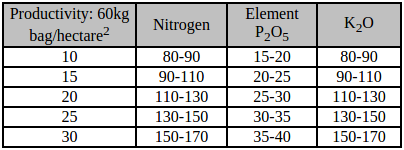

Coffee is a brewed drink prepared from roasted coffee beans, which are the seeds of "berries" from the Coffea plant. Coffee plants are cultivated in over 70 countries, primarily in the equatorial regions of the Americas, Southeast Asia, India and Africa. The two most commonly grown are the highly regarded arabica, and the less sophisticated but stronger and more hardy robusta. The latter is resistant to the coffee leaf rust, Hemileia vastatrix, but has a more bitter taste. Once ripe, coffee beans are picked, processed, and dried. Green (unroasted) coffee beans are one of the most traded agricultural commodities in the world. Once traded, the beans are roasted to varying degrees, depending on the desired flavor, before being ground and brewed to create coffee.
Soil is the guiding factor in coffee plantation. The ideal soil is one with a good sub-surface drainage, and one that is easily workable. The presence of humus and other nitrogenous matter in the soil is an advantage.
When buying soil for growing coffee, the following values are recommended for coffee soil:
P (resin) - 15-30 µg/cm3
P (Mehlich 1): 10-20 ppm
SO4-S: 10-15 µg/cm3
K% CEC (pH 7.0): 10-15%
Ca% CEC (pH 7.0): 40-60%
Mg% CEC (pH 7.0): 10-15%
V%: 60-70%
CEC (pH 7.0): 7-10 meq/100 cm3
B (hot water): 0.4-0.5 ppm
B (0.05 N HCl): 1.0-1.2 ppm
Cu (Mehlich 1): 2-3 ppm
Zn (Mehlich 1): 4-7
Since the coffee hullls and pulp are rich in nutrients, many people often use coffee grounds as fertilizer. One 60 kg bag of coffee contains 1,026 g of nitrogen, 60 g of phosphorous, 918 g of potassium, 162 g of calcium, 90 g of magnesium, 72 g of sulfur, 0.96 g of boron, 0.80 g of copper, 3.6 g of iron, 1.2 g of manganese, 0.002 g of molybdenum, and 0.72 g of zinc. The pulp resulting from processing contains 1,068 g of nitrogen, 84 g of phosphorous, 2,250 g of potassium, 246 g of calcium, 78 g of magnesium, 90 g of sulfur, 2.04 g of boron, 1.08 g of copper, 9.0 g of iron, 1.80 g of Manganese, 0.004 g of Molybdenum, and 4.20 g of Zinc.
For growing Arabica coffee beans, there are two optimal growing climates: The subtropical regions, at high altitudes of 16-24°. Rainy and dry seasons must be well defined, and altitude must be between 1800-3600 feet. These conditions result in one coffee growing season and one maturation season, usually in the coldest part of autumn. The equatorial regions at latitudes lower than 10° and altitudes of 3600-6300 feet. Frequent rainfall causes almost continuous flowering, which results in two coffee harvesting seasons. The period of highest rainfall determines the main harvesting period, while the period of least rainfall determines the second harvest season. Because rainfall is too frequent for patio drying to occur, artificial drying with mechanical dryers is performed in this type of coffee growing environment.
Recommended amounts of N, P2O5, and K2O relative to coffee plant productivity.
The first stage is endothermic. The green beans are slowly dried to become a yellow color and the beans begin to smell like toast or popcorn. The second step, often called the first crack, occurs at approximately 205 °C (400 °F) in which the bean doubles in size, becomes a light brown color, and experiences a weight loss of approximately 5%. The corresponding Agtron number for this color is between 95-90. In the next step the temperature rises from 205 °C to approximately 220 °C, the color changes from light brown to medium brown, and a weight loss of approximately 13% occurs. The resulting chemical process is called pyrolysis and is characterized by a change in the chemical composition of the bean as well as a release of CO2.
Coffee Grinders: Bur, Blade Coffee Grinder Reviews There are two main types of coffee bean grinders available. Blade coffee grinders sell for about $20, grind the bean unevenly, and are messy. Burr coffee grinders, are about $60-$125, grind evenly, and are clean and easy. The extra investment is one of the best you will make, as burr grinders improve both the coffee quality and the ease of brewing. Burrs should be replaced periodically (every 600-2000 lbs of coffee), but for typical home use it is only necessary to clean the burrs.
The following general rules apply to each coffee making process discussed. Coffee should be brewed for 4.5-5 minutes using a ratio of 55 grams of ground coffee per liter of filtered water (195-205°F). It is convenient to use 2 tablespoons of coffee per 6 ounces of filtered water. Filtered water and spring water are recommended. Tap water imparts off flavors to the coffee and some minerals are essential to coffee flavor. Distilled water is not recommended for brewing coffee as it lacks the minerals to bring out the natural flavors of the coffee.
The coffee market and its various elements are what drive the coffee industry. Within the Market portion of the coffeeresearch.org site you will find information and statistics on coffee consumption, exportation, importation, and explanations of the world coffee market. This section will focus on general coffee statistics, coffee market prices, and coffee market trends.
Main Subsections in Market:
New York Coffee Exchange 101
Consumption Statistics
Indicator Prices / Exports / Imports
Market Links
Weather
The following links provide information regarding coffee plant diseases:
Coffee Leaf Rust
Coffee Berry Disease
Bacterial Blight
Nematodes
Leaf Miner